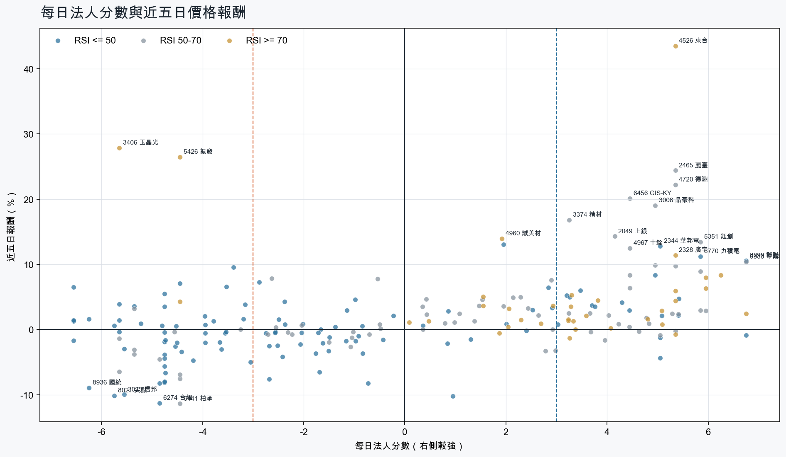
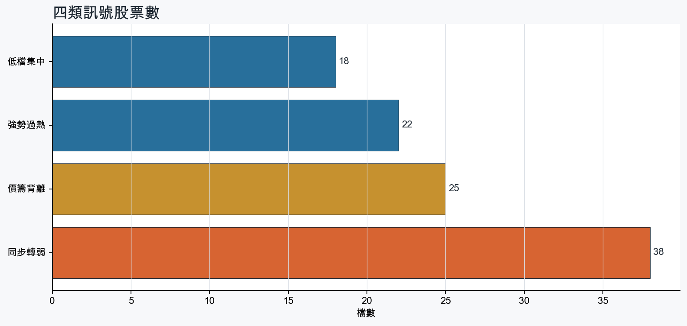
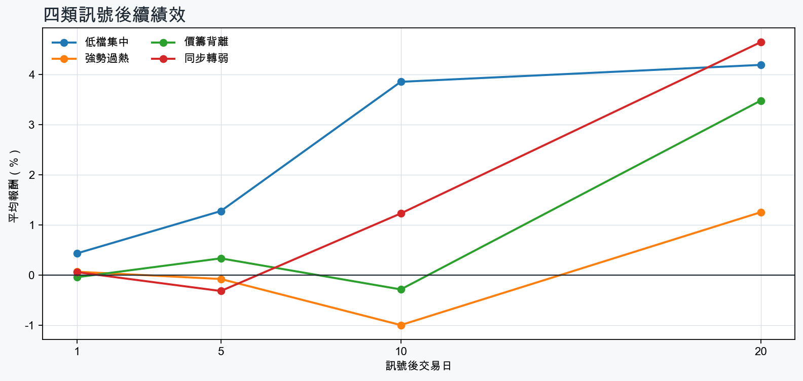

市場情緒中性分歧
近5日法人合計-4,477,958 張
篩選池上漲比例60.0%
籌碼好 / RSI低15 檔
籌碼差 / 價跌15 檔



EPS × PE VALUATION
法人常用的相對估值
顯示保守、基準與樂觀估值帶，不把單一數字包裝成精準目標價。
最新累計 EPS 依季數年化 × 同產業有效 P/E 的 Q25／中位數／Q75。排除本公司、非正 P/E，並以 1.5×IQR 排除離群值。估值帶是公開資料篩選值，不是法人目標價；未使用分析師預估 EPS。
MOOD × MONEY
情緒與籌碼雷達
熱度代表被討論程度；情緒分與法人方向分開計算。熱門不等於適合追價，樣本不足也不硬判多空。
| 股票 | 情緒 | 討論熱度 | 情緒 × 籌碼 | 情緒 × 基本面 |
|---|---|---|---|---|
| 2603 長榮強勢過熱 | 中性分歧 -3.6信心 90 | 1001 篇 / 123 留言 / 3 則新聞 | 高熱分歧法人分 +3.2 | 基本面與情緒分歧基本面分 +3.6 |
| 0050 元大台灣50價籌背離 | 偏空 -24.0信心 85 | 982 篇 / 112 留言 / 1 則新聞 | 情籌雙弱法人分 -6.5 | 基本面與情緒分歧基本面分 +0.0 |
| 2337 旺宏價籌背離 | 情緒高漲 +45.9信心 100 | 952 篇 / 89 留言 / 3 則新聞 | 熱門但法人撤退法人分 -4.8 | 基本面與情緒共振基本面分 +3.6 |
| 6274 台燿同步轉弱 | 情緒高漲 +38.3信心 77 | 791 篇 / 33 留言 / 3 則新聞 | 熱門但法人撤退法人分 -4.8 | 基本面與情緒共振基本面分 +3.6 |
| 8021 尖點同步轉弱 | 偏空 -29.7信心 30 | 470 篇 / 0 留言 / 3 則新聞 | 情籌雙弱法人分 -5.8 | 基本面佳、情緒悲觀基本面分 +3.6 |
| 8039 台虹同步轉弱 | 中性分歧 +0.0信心 30 | 470 篇 / 0 留言 / 3 則新聞 | 情籌混合法人分 -4.8 | 基本面與情緒分歧基本面分 -0.1 |
| 3264 欣銓同步轉弱 | 偏多 +29.7信心 30 | 470 篇 / 0 留言 / 3 則新聞 | 熱門但法人撤退法人分 -4.8 | 基本面與情緒共振基本面分 +3.6 |
| 2313 華通同步轉弱 | 中性分歧 +0.0信心 30 | 470 篇 / 0 留言 / 3 則新聞 | 情籌混合法人分 -4.8 | 基本面與情緒分歧基本面分 +3.0 |
| 6285 啟碁同步轉弱 | 偏多 +29.7信心 30 | 470 篇 / 0 留言 / 3 則新聞 | 熱門但法人撤退法人分 -4.8 | 基本面與情緒共振基本面分 +3.0 |
| 6834 天二科技同步轉弱 | 中性分歧 +9.9信心 30 | 470 篇 / 0 留言 / 3 則新聞 | 情籌混合法人分 -4.8 | 基本面與情緒分歧基本面分 +3.6 |
| 3406 玉晶光價籌背離 | 中性分歧 +0.0信心 30 | 470 篇 / 0 留言 / 3 則新聞 | 情籌混合法人分 -5.7 | 基本面與情緒分歧基本面分 +3.0 |
| 2455 全新價籌背離 | 中性分歧 +0.0信心 30 | 470 篇 / 0 留言 / 3 則新聞 | 情籌混合法人分 -4.8 | 基本面與情緒分歧基本面分 +3.6 |
01
籌碼好 / RSI低
優先研究基本面；法人續買且價格止穩時，才適合分批觀察。
| 股票 / 確認狀態 | 每日法人分 | 浦男式近似 | 法人加速度 | RSI / 相對強弱 | 量價確認 | 融資融券 | 每週集保確認 | 基本面 | EPS × 同業 P/E 估值 | 情緒 / 情籌 | 近期消息 | 論壇討論 |
|---|---|---|---|---|---|---|---|---|---|---|---|---|
| 8299 群聯可研究 · 100 分籌碼與價格確認，可列研究清單 | +6.8法人 +2,882 張 / 5 天 | 接近 · 79站上月線；法人籌碼偏多；法人買盤加速；留意中期均線未翻多、相對強度普通 | +1,475 張近3日 +1,940 / 連續 +5 日 | 46.2相對大盤 -1.7% | 量比 1.44確認分 +4.120日線低於60日線 | -0.6%融資 -59 張 / 融券 +5 張 | -1.34 pp1000張 -2.39 pp | 單月營收年增 +370.3%；累計營收年增 +290.9%；2026 Q2 累計 EPS 187.43仍需觀察下一期財報延續性來源：公開資訊觀測站 | 基準 NT$ 9,473估值帶 6,538–16,670現價 2,040 · 低於估值帶 · 距基準 +364.4%2026 Q2 累計 EPS 187.4 → 年化 374.9半導體同業 P/E 17.44／25.27／44.47 · n=146 · 信心中等以 Q2 累計 EPS 年化，不等同分析師全年預估來源：TWSE／TPEx 每日本益比 | 中性分歧 +0.0熱度 47 / 信心 30情籌混合 | 【12:45 即時新聞】群聯(8299)股價走強，高股息與記憶體題材受關注CMoney投資網誌 · 10/281表看》DRAM太貴手機賣不動？伺服器撐起需求記憶體缺貨潮燒到2027年！官股投顧喊買4檔南亞科、群聯…最新EPS、目標價全說了- 上市櫃旺得富理財網 · 10/28 | 近期沒有明確提及本股的論壇樣本 |
| 2344 華邦電可研究 · 100 分籌碼與價格確認，可列研究清單 | +5.0法人 +60,669 張 / 4 天 | 接近 · 85站上月線；法人籌碼偏多；法人買盤加速；留意中期均線未翻多 | +46,822 張近3日 +48,558 / 連續 +2 日 | 46.5相對大盤 +2.6% | 量比 1.16確認分 +5.220日線低於60日線 | -%融資 - 張 / 融券 - 張 | -0.69 pp1000張 -0.81 pp | 單月營收年增 +256.7%；累計營收年增 +187.4%；2026 Q2 累計 EPS 7.65仍需觀察下一期財報延續性來源：公開資訊觀測站 | 基準 NT$ 386.6估值帶 259.9–680.4現價 172.0 · 低於估值帶 · 距基準 +124.8%2026 Q2 累計 EPS 7.65 → 年化 15.30半導體同業 P/E 16.99／25.27／44.47 · n=146 · 信心中等以 Q2 累計 EPS 年化，不等同分析師全年預估來源：TWSE／TPEx 每日本益比 | 偏多 +29.7熱度 47 / 信心 30情籌共振 | 外資買超159億！ 狂掃友達、華邦電 「這檔超慘」法說報喜還被砍Yahoo股市 · 10/28三大法人買賣超– 外資買超(2344)華邦電、(2327)國巨*，投信買超(3711)日月光投控、(5274)信驊，法人合計買超298.95億元(1028)｜豐雲學堂2026 年 10 月永豐金證券 · 10/28 | 近期沒有明確提及本股的論壇樣本 |
| 3702 大聯大可研究 · 92 分籌碼與價格確認，可列研究清單 | +5.4法人 +11,666 張 / 5 天 | 接近 · 81中期均線偏多；法人籌碼偏多；法人買盤加速；留意未站月線、動能位置非最佳 | +4,093 張近3日 +7,388 / 連續 +5 日 | 42.1相對大盤 +1.1% | 量比 1.06確認分 +2.8收盤跌破20日線 | -%融資 - 張 / 融券 - 張 | +0.06 pp1000張 +0.12 pp | 單月營收年增 +146.5%；累計營收年增 +72.5%；2026 Q2 累計 EPS 8.422026 Q2 累計營益率 2.6%來源：公開資訊觀測站 | 基準 NT$ 209.0估值帶 163.5–358.2現價 116.0 · 低於估值帶 · 距基準 +80.2%2026 Q2 累計 EPS 8.42 → 年化 16.84電子通路同業 P/E 9.71／12.41／21.27 · n=30 · 信心中等以 Q2 累計 EPS 年化，不等同分析師全年預估來源：TWSE／TPEx 每日本益比 | 樣本不足 +0.0熱度 0 / 信心 0情緒樣本不足 | 近期沒有通過股票語境篩選的新聞 | 近期沒有明確提及本股的論壇樣本 |
| 2376 技嘉可研究 · 95 分籌碼與價格確認，可列研究清單 | +5.1法人 +3,910 張 / 5 天 | 命中 · 86站上月線；中期均線偏多；法人籌碼偏多；留意量能尚未確認、動能位置非最佳 | +831 張近3日 +2,270 / 連續 +5 日 | 39.0相對大盤 +2.6% | 量比 0.66確認分 +4.0價格、量能與籌碼未見明顯弱項 | -%融資 - 張 / 融券 - 張 | -1.11 pp1000張 -1.47 pp | 單月營收年增 +125.4%；累計營收年增 +63.2%；2026 Q2 累計 EPS 17.732026 Q2 累計營益率 6.2%來源：公開資訊觀測站 | 基準 NT$ 604.6估值帶 441.1–850.0現價 362.5 · 低於估值帶 · 距基準 +66.8%2026 Q2 累計 EPS 17.73 → 年化 35.46電腦及週邊同業 P/E 12.44／17.05／23.97 · n=80 · 信心中等以 Q2 累計 EPS 年化，不等同分析師全年預估來源：TWSE／TPEx 每日本益比 | 樣本不足 +0.0熱度 0 / 信心 0情緒樣本不足 | 近期沒有通過股票語境篩選的新聞 | 近期沒有明確提及本股的論壇樣本 |
| 6770 力積電可研究 · 98 分籌碼與價格確認，可列研究清單 | +5.8法人 +74,223 張 / 4 天 | 命中 · 91站上月線；中期均線偏多；法人籌碼偏多；留意動能位置非最佳 | +126,815 張近3日 +82,858 / 連續 +4 日 | 44.4相對大盤 +1.4% | 量比 1.57確認分 +4.8價格、量能與籌碼未見明顯弱項 | -%融資 - 張 / 融券 - 張 | -5.28 pp1000張 -5.08 pp | 單月營收年增 +94.0%；累計營收年增 +52.5%；2026 Q2 累計 EPS 4.08仍需觀察下一期財報延續性來源：公開資訊觀測站 | 基準 NT$ 206.2估值帶 138.6–362.9現價 71.30 · 低於估值帶 · 距基準 +189.2%2026 Q2 累計 EPS 4.08 → 年化 8.16半導體同業 P/E 16.99／25.27／44.47 · n=146 · 信心較低以 Q2 累計 EPS 年化，不等同分析師全年預估；年化 EPS 為交易所近四季 EPS 的 2.72 倍，需保守解讀來源：TWSE／TPEx 每日本益比 | 偏多 +19.8熱度 39 / 信心 20情籌混合 | 智原、玉晶光一字鎖漲停！友達、力積電爆量狂衝「網急問：這波能追嗎？」老手開釋：不要一次把子彈打光旺得富理財網 · 10/28外資擴大買超159億元！華邦電、力積電獲加碼 旺宏卻遭砍近3萬張經濟日報 · 10/28 | 近期沒有明確提及本股的論壇樣本 |
| 2317 鴻海可研究 · 90 分籌碼與價格確認，可列研究清單 | +4.3法人 +54,136 張 / 5 天 | 接近 · 85站上月線；法人籌碼偏多；法人買盤加速；留意中期均線未翻多 | +1,631 張近3日 +21,123 / 連續 +5 日 | 45.8相對大盤 +2.7% | 量比 1.09確認分 +3.320日線低於60日線 | -%融資 - 張 / 融券 - 張 | -0.45 pp1000張 -0.55 pp | 單月營收年增 +38.4%；累計營收年增 +39.5%；2026 Q2 累計 EPS 7.842026 Q2 累計營益率 3.7%來源：公開資訊觀測站 | 基準 NT$ 312.5估值帶 228.6–518.5現價 251.5 · 估值帶內 · 距基準 +24.3%2026 Q2 累計 EPS 7.84 → 年化 15.68其他電子同業 P/E 14.58／19.93／33.07 · n=67 · 信心中等以 Q2 累計 EPS 年化，不等同分析師全年預估來源：TWSE／TPEx 每日本益比 | 偏多 +29.7熱度 47 / 信心 30情籌共振 | 東台、緯創、鴻海...台股一度跌破季線，外資買超哪些股票？22檔布局名單曝光！非洲動物大遷徙給投資人的啟示今周刊 · 10/28誰是輝達 Vera Rubin 放量大贏家？傳鴻海訂單佔比上看五成鏈新聞 ABMedia · 10/28 | 近期沒有明確提及本股的論壇樣本 |
| 2382 廣達可研究 · 88 分籌碼與價格確認，可列研究清單 | +4.4法人 +17,394 張 / 5 天 | 接近 · 79站上月線；法人籌碼偏多；法人買盤加速；留意中期均線未翻多、相對強度普通 | +1,127 張近3日 +7,729 / 連續 +5 日 | 47.2相對大盤 -0.2% | 量比 1.09確認分 +2.820日線低於60日線 | -%融資 - 張 / 融券 - 張 | -0.42 pp1000張 -0.38 pp | 單月營收年增 +76.7%；累計營收年增 +99.4%；2026 Q2 累計 EPS 12.932026 Q2 累計營益率 3.1%來源：公開資訊觀測站 | 基準 NT$ 440.9估值帶 321.7–619.9現價 330.0 · 估值帶內 · 距基準 +33.6%2026 Q2 累計 EPS 12.93 → 年化 25.86電腦及週邊同業 P/E 12.44／17.05／23.97 · n=80 · 信心中等以 Q2 累計 EPS 年化，不等同分析師全年預估來源：TWSE／TPEx 每日本益比 | 樣本不足 +0.0熱度 0 / 信心 0情緒樣本不足 | 近期沒有通過股票語境篩選的新聞 | 近期沒有明確提及本股的論壇樣本 |
| 3717 聯嘉投控等待確認 · 85 分籌碼有訊號，但價格尚未確認 | +6.8法人 +2,763 張 / 5 天 | 接近 · 69中期均線偏多；法人籌碼偏多；買超具延續性；留意未站月線、法人買盤未加速 | -14 張近3日 +2,026 / 連續 +6 日 | 44.9相對大盤 +10.8% | 量比 0.23確認分 +1.1收盤跌破20日線；成交量不足；法人買盤減速 | -%融資 - 張 / 融券 - 張 | -2.04 pp1000張 -3.92 pp | 單月營收年增 +15.5%；累計營收年增 +427.1%；2026 Q2 累計 EPS 1.152026 Q2 累計營益率 7.7%來源：公開資訊觀測站 | 不適用年化 EPS 與交易所近四季 EPS 差異過大，可能有股本調整或一次性損益 | 樣本不足 +0.0熱度 28 / 信心 10情緒樣本不足 | 【聯嘉投控法說會重點內容備忘錄】未來展望趨勢 20260929富果直送 · 09/30 | 近期沒有明確提及本股的論壇樣本 |
| 3260 威剛可研究 · 84 分籌碼與價格確認，可列研究清單 | +5.0法人 +5,399 張 / 3 天 | 接近 · 74站上月線；法人籌碼偏多；法人買盤加速；留意中期均線未翻多、相對強度普通 | +5,514 張近3日 +4,958 / 連續 +2 日 | 47.2相對大盤 -1.5% | 量比 2.50確認分 +1.920日線低於60日線 | +0.5%融資 +94 張 / 融券 -2 張 | -2.19 pp1000張 -1.53 pp | 單月營收年增 +199.9%；累計營收年增 +215.6%；2026 Q2 累計 EPS 62.46仍需觀察下一期財報延續性來源：公開資訊觀測站 | 基準 NT$ 3,157估值帶 2,179–5,555現價 363.5 · 低於估值帶 · 距基準 +768.4%2026 Q2 累計 EPS 62.46 → 年化 124.9半導體同業 P/E 17.44／25.27／44.47 · n=146 · 信心中等以 Q2 累計 EPS 年化，不等同分析師全年預估來源：TWSE／TPEx 每日本益比 | 偏多 +29.7熱度 47 / 信心 30情籌共振 | 記憶體大爆發！「這檔」Q3 EPS狂賺36元攜威剛漲停 南亞科飆8%、群聯也衝6%Yahoo股市 · 10/28熱門股／SK海力士Q3獲利暴增6倍創新高！威剛、晶豪科亮燈漲停 南亞科勁揚逾8%非凡新聞台 · 10/28 | 近期沒有明確提及本股的論壇樣本 |
| 3714 富采可研究 · 82 分籌碼與價格確認，可列研究清單 | +5.4法人 +6,399 張 / 5 天 | 接近 · 66中期均線偏多；法人籌碼偏多；法人買盤加速；留意未站月線、相對強度普通 | +4,972 張近3日 +5,873 / 連續 +7 日 | 44.4相對大盤 -2.1% | 量比 0.75確認分 +1.2收盤跌破20日線 | -%融資 - 張 / 融券 - 張 | +0.32 pp1000張 +0.34 pp | 單月營收年增 +18.8%；累計營收年增 +7.5%；2026 Q2 累計 EPS 1.492026 Q2 累計營益率 -5.9%來源：公開資訊觀測站 | 基準 NT$ 74.17估值帶 37.46–117.3現價 64.60 · 估值帶內 · 距基準 +14.8%2026 Q2 累計 EPS 1.49 → 年化 2.98光電同業 P/E 12.57／24.89／39.36 · n=69 · 信心較低以 Q2 累計 EPS 年化，不等同分析師全年預估；交易所無有效本益比，無法交叉檢核近四季 EPS來源：TWSE／TPEx 每日本益比 | 中性分歧 -9.9熱度 47 / 信心 30情籌混合 | 減資倒數富采新股衝百元俱樂部- 日報工商時報 · 10/28富采Q4高值應用撐營運，Micro LED備戰2027量產- 新聞MoneyDJ理財網 · 10/02 | 近期沒有明確提及本股的論壇樣本 |
| 2363 矽統可研究 · 80 分籌碼與價格確認，可列研究清單 | +3.7法人 +2,376 張 / 4 天 | 接近 · 75中期均線偏多；法人籌碼偏多；法人買盤加速；留意未站月線、相對強度普通 | +1,591 張近3日 +1,746 / 連續 +2 日 | 41.1相對大盤 -2.8% | 量比 1.04確認分 +1.8收盤跌破20日線 | -%融資 - 張 / 融券 - 張 | -0.39 pp1000張 -0.05 pp | 單月營收年增 +6.0%；累計營收年增 +76.3%；2026 Q2 累計 EPS 0.202026 Q2 累計營益率 5.5%來源：公開資訊觀測站 | 基準 NT$ 9.94估值帶 6.74–17.15現價 55.70 · 高於估值帶 · 距基準 -82.2%2026 Q2 累計 EPS 0.20 → 年化 0.40半導體同業 P/E 16.85／24.84／42.88 · n=145 · 信心中等以 Q2 累計 EPS 年化，不等同分析師全年預估來源：TWSE／TPEx 每日本益比 | 偏多 +29.7熱度 47 / 信心 30情籌共振 | 達明前三季EPS 2.64元 矽統1.65元UDN · 10/28【13:12 即時新聞】矽統(2363)盤中走強逾7% 聚焦第三季獲利跳增CMoney投資網誌 · 10/28 | 近期沒有明確提及本股的論壇樣本 |
| 3481 群創等待確認 · 70 分籌碼有訊號，但價格尚未確認 | +3.8法人 +56,033 張 / 3 天 | 接近 · 71中期均線偏多；法人籌碼偏多；法人買盤加速；留意未站月線、量能異常 | +16,822 張近3日 +34,747 / 連續 +1 日 | 41.5相對大盤 +0.1% | 量比 0.52確認分 -0.3收盤跌破20日線；成交量不足 | -%融資 - 張 / 融券 - 張 | -0.36 pp1000張 -0.20 pp | 單月營收年增 +0.7%；累計營收年增 +10.6%；2026 Q2 累計 EPS 0.772026 Q2 累計營益率 2.4%來源：公開資訊觀測站 | 基準 NT$ 37.76估值帶 19.16–58.18現價 48.45 · 估值帶內 · 距基準 -22.1%2026 Q2 累計 EPS 0.77 → 年化 1.54光電同業 P/E 12.44／24.52／37.78 · n=68 · 信心中等以 Q2 累計 EPS 年化，不等同分析師全年預估來源：TWSE／TPEx 每日本益比 | 中性分歧 +0.0熱度 47 / 信心 30情籌混合 | 群創還算面板股？FOPLP月出貨破4000萬片法人揭玻璃基板2028時間表- 上市櫃旺得富理財網 · 10/283481 群創 - 起飛囉！ 👍 - 股市爆料同學會CMoney · 10/28 | 近期沒有明確提及本股的論壇樣本 |
| 2305 全友等待確認 · 68 分籌碼有訊號，但價格尚未確認 | +5.0法人 +2,590 張 / 4 天 | 接近 · 61中期均線偏多；法人籌碼偏多；法人買盤加速；留意未站月線、明顯弱於大盤 | +2,358 張近3日 +2,041 / 連續 -1 日 | 44.6相對大盤 -11.8% | 量比 0.38確認分 -0.8收盤跌破20日線；近20日弱於大盤；成交量不足 | -%融資 - 張 / 融券 - 張 | -4.44 pp1000張 -3.36 pp | 單月營收年增 +212.8%；累計營收年增 +125.1%；2026 Q2 累計 EPS 0.51仍需觀察下一期財報延續性來源：公開資訊觀測站 | 基準 NT$ 16.81估值帶 12.48–23.31現價 54.00 · 高於估值帶 · 距基準 -68.9%2026 Q2 累計 EPS 0.51 → 年化 1.02電腦及週邊同業 P/E 12.24／16.48／22.85 · n=78 · 信心中等以 Q2 累計 EPS 年化，不等同分析師全年預估來源：TWSE／TPEx 每日本益比 | 樣本不足 -9.9熱度 28 / 信心 10情緒樣本不足 | 「妖股」全友出關首日摜跌停...逾2千張排隊逃生 分析師這樣看Yahoo股市 · 09/30 | 近期沒有明確提及本股的論壇樣本 |
| 2388 威盛等待確認 · 64 分籌碼有訊號，但價格尚未確認 | +3.2法人 +1,882 張 / 4 天 | 接近 · 58法人籌碼偏多；法人買盤加速；買超具延續性；留意未站月線、中期均線未翻多 | +1,358 張近3日 +1,328 / 連續 +2 日 | 44.4相對大盤 +0.2% | 量比 0.86確認分 +0.3收盤跌破20日線；20日線低於60日線 | -%融資 - 張 / 融券 - 張 | -0.72 pp1000張 -0.19 pp | 累計營收年增 +32.5%；2026 Q2 累計 EPS 0.34單月營收年增 -6.7%；2026 Q2 累計營益率 -15.2%來源：公開資訊觀測站 | 基準 NT$ 17.02估值帶 11.55–30.24現價 68.60 · 高於估值帶 · 距基準 -75.2%2026 Q2 累計 EPS 0.34 → 年化 0.68半導體同業 P/E 16.99／25.03／44.47 · n=146 · 信心較低以 Q2 累計 EPS 年化，不等同分析師全年預估；年化 EPS 為交易所近四季 EPS 的 0.43 倍，需保守解讀來源：TWSE／TPEx 每日本益比 | 樣本不足 +0.0熱度 0 / 信心 0情緒樣本不足 | 近期沒有通過股票語境篩選的新聞 | 近期沒有明確提及本股的論壇樣本 |
| 2464 盟立等待確認 · 60 分籌碼有訊號，但價格尚未確認 | +3.3法人 +1,824 張 / 2 天 | 接近 · 60法人籌碼偏多；法人買盤加速；量價健康；留意未站月線、中期均線未翻多 | +2,350 張近3日 +2,211 / 連續 -1 日 | 48.1相對大盤 -5.8% | 量比 1.71確認分 -0.5收盤跌破20日線；20日線低於60日線；近20日弱於大盤 | -%融資 - 張 / 融券 - 張 | -5.52 pp1000張 -5.56 pp | 單月營收年增 +78.0%；累計營收年增 +36.7%；2026 Q2 累計 EPS 0.662026 Q2 累計營益率 4.4%來源：公開資訊觀測站 | 基準 NT$ 26.06估值帶 19.25–43.18現價 179.5 · 高於估值帶 · 距基準 -85.5%2026 Q2 累計 EPS 0.66 → 年化 1.32其他電子同業 P/E 14.58／19.74／32.71 · n=67 · 信心較低以 Q2 累計 EPS 年化，不等同分析師全年預估；年化 EPS 為交易所近四季 EPS 的 3.47 倍，需保守解讀來源：TWSE／TPEx 每日本益比 | 樣本不足 +0.0熱度 0 / 信心 0情緒樣本不足 | 近期沒有通過股票語境篩選的新聞 | 近期沒有明確提及本股的論壇樣本 |
02
籌碼好 / RSI高
趨勢強但不追價，等待量縮、RSI降溫或回測支撐。
| 股票 / 確認狀態 | 每日法人分 | 浦男式近似 | 法人加速度 | RSI / 相對強弱 | 量價確認 | 融資融券 | 每週集保確認 | 基本面 | EPS × 同業 P/E 估值 | 情緒 / 情籌 | 近期消息 | 論壇討論 |
|---|---|---|---|---|---|---|---|---|---|---|---|---|
| 2355 敬鵬等待拉回 · 100 分等拉回，不追價 | +5.3法人 +5,570 張 / 4 天 | 命中 · 96站上月線；中期均線偏多；法人籌碼偏多；留意動能位置非最佳 | +2,232 張近3日 +5,132 / 連續 +3 日 | 75.7相對大盤 +33.0% | 量比 0.94確認分 +6.5價格、量能與籌碼未見明顯弱項 | -%融資 - 張 / 融券 - 張 | +2.08 pp1000張 +1.15 pp | 單月營收年增 +44.3%；累計營收年增 +11.2%；2026 Q2 累計 EPS 1.072026 Q2 累計營益率 4.6%來源：公開資訊觀測站 | 基準 NT$ 55.90估值帶 37.51–92.32現價 54.50 · 估值帶內 · 距基準 +2.6%2026 Q2 累計 EPS 1.07 → 年化 2.14電子零組件同業 P/E 17.53／26.12／43.14 · n=147 · 信心中等以 Q2 累計 EPS 年化，不等同分析師全年預估來源：TWSE／TPEx 每日本益比 | 偏多 +29.7熱度 47 / 信心 30情籌共振 | 工控新單報喜！敬鵬早盤強攻漲停 成交量衝破8500張自由財經 · 10/282355 敬鵬- 〈焦點股〉敬鵬獲工控新訂單挹注營收股價順勢大漲攻漲停鎖死54.5元 - 股市爆料同學會CMoney · 10/28 | 近期沒有明確提及本股的論壇樣本 |
| 2356 英業達等待拉回 · 100 分等拉回，不追價 | +6.0法人 +44,634 張 / 5 天 | 接近 · 86站上月線；法人籌碼偏多；法人買盤加速；留意中期均線未翻多、動能位置非最佳 | +20,799 張近3日 +32,794 / 連續 +7 日 | 71.7相對大盤 +8.8% | 量比 1.56確認分 +6.520日線低於60日線 | -%融資 - 張 / 融券 - 張 | +0.05 pp1000張 +0.09 pp | 單月營收年增 +62.9%；累計營收年增 +42.8%；2026 Q2 累計 EPS 1.762026 Q2 累計營益率 1.8%來源：公開資訊觀測站 | 基準 NT$ 59.24估值帶 43.79–84.37現價 63.80 · 估值帶內 · 距基準 -7.1%2026 Q2 累計 EPS 1.76 → 年化 3.52電腦及週邊同業 P/E 12.44／16.83／23.97 · n=80 · 信心中等以 Q2 累計 EPS 年化，不等同分析師全年預估來源：TWSE／TPEx 每日本益比 | 樣本不足 +0.0熱度 28 / 信心 10情緒樣本不足 | 英業達外資大量回補- 日報工商時報 · 10/28 | 近期沒有明確提及本股的論壇樣本 |
| 2377 微星等待拉回 · 100 分等拉回，不追價 | +6.8法人 +12,504 張 / 5 天 | 命中 · 92站上月線；中期均線偏多；法人籌碼偏多；留意動能位置非最佳 | +231 張近3日 +6,352 / 連續 +5 日 | 75.5相對大盤 +13.6% | 量比 1.32確認分 +4.8價格、量能與籌碼未見明顯弱項 | -%融資 - 張 / 融券 - 張 | +2.74 pp1000張 +2.59 pp | 單月營收年增 +1.8%；2026 Q2 累計 EPS 7.59累計營收年增 -5.5%；2026 Q2 累計營益率 6.7%來源：公開資訊觀測站 | 基準 NT$ 258.8估值帶 188.8–363.9現價 168.5 · 低於估值帶 · 距基準 +53.6%2026 Q2 累計 EPS 7.59 → 年化 15.18電腦及週邊同業 P/E 12.44／17.05／23.97 · n=80 · 信心中等以 Q2 累計 EPS 年化，不等同分析師全年預估來源：TWSE／TPEx 每日本益比 | 樣本不足 +0.0熱度 0 / 信心 0情緒樣本不足 | 近期沒有通過股票語境篩選的新聞 | 近期沒有明確提及本股的論壇樣本 |
| 1808 潤隆等待拉回 · 100 分等拉回，不追價 | +6.0法人 +9,613 張 / 5 天 | 接近 · 75站上月線；法人籌碼偏多；法人買盤加速；留意中期均線未翻多、量能尚未確認 | +7,359 張近3日 +8,819 / 連續 +10 日 | 80.7相對大盤 +19.1% | 量比 2.74確認分 +5.820日線低於60日線 | -%融資 - 張 / 融券 - 張 | +0.57 pp1000張 +0.58 pp | 單月營收年增 +63462.8%；累計營收年增 +14769.5%；2026 Q2 累計 EPS 2.52仍需觀察下一期財報延續性來源：公開資訊觀測站 | 基準 NT$ 49.34估值帶 33.31–63.50現價 37.25 · 估值帶內 · 距基準 +32.5%2026 Q2 累計 EPS 2.52 → 年化 5.04建材營造同業 P/E 6.61／9.79／12.60 · n=62 · 信心中等以 Q2 累計 EPS 年化，不等同分析師全年預估來源：TWSE／TPEx 每日本益比 | 樣本不足 +0.0熱度 0 / 信心 0情緒樣本不足 | 近期沒有通過股票語境篩選的新聞 | 近期沒有明確提及本股的論壇樣本 |
| 6277 宏正等待拉回 · 100 分等拉回，不追價 | +5.3法人 +2,263 張 / 4 天 | 接近 · 90站上月線；中期均線偏多；法人籌碼偏多；留意RSI過熱 | +576 張近3日 +1,759 / 連續 +3 日 | 79.9相對大盤 +24.9% | 量比 1.72確認分 +6.5價格、量能與籌碼未見明顯弱項 | -%融資 - 張 / 融券 - 張 | +1.52 pp1000張 +0.98 pp | 單月營收年增 +18.4%；累計營收年增 +15.8%；2026 Q2 累計 EPS 2.50仍需觀察下一期財報延續性來源：公開資訊觀測站 | 基準 NT$ 84.15估值帶 62.20–119.8現價 95.40 · 估值帶內 · 距基準 -11.8%2026 Q2 累計 EPS 2.50 → 年化 5.00電腦及週邊同業 P/E 12.44／16.83／23.97 · n=80 · 信心中等以 Q2 累計 EPS 年化，不等同分析師全年預估來源：TWSE／TPEx 每日本益比 | 樣本不足 +0.0熱度 0 / 信心 0情緒樣本不足 | 近期沒有通過股票語境篩選的新聞 | 近期沒有明確提及本股的論壇樣本 |
| 2603 長榮等待拉回 · 99 分等拉回，不追價 | +3.2法人 +6,925 張 / 5 天 | 接近 · 86站上月線；中期均線偏多；法人籌碼偏多；留意量能異常、動能位置非最佳 | +2,855 張近3日 +5,632 / 連續 +7 日 | 70.5相對大盤 +10.6% | 量比 0.48確認分 +4.8成交量不足 | -%融資 - 張 / 融券 - 張 | +1.59 pp1000張 +1.92 pp | 單月營收年增 +63.7%；累計營收年增 +15.4%；2026 Q2 累計 EPS 11.24仍需觀察下一期財報延續性來源：公開資訊觀測站 | 基準 NT$ 252.4估值帶 205.5–325.1現價 263.0 · 估值帶內 · 距基準 -4.0%2026 Q2 累計 EPS 11.24 → 年化 22.48航運業同業 P/E 9.14／11.23／14.46 · n=26 · 信心中等以 Q2 累計 EPS 年化，不等同分析師全年預估來源：TWSE／TPEx 每日本益比 | 中性分歧 -3.6熱度 100 / 信心 90高熱分歧 | 2603 長榮 - 剛剛看新聞報導，10/30全球四大洲，港口工人串聯，聯合舉行... - 股市爆料同學會CMoney · 10/282603 長榮 - 佩芬報導運價勢必下修📉那股價要漲了嗎?🚢📈💰💰💰 - 股市爆料同學會CMoney · 10/28 | [新聞] 因俄烏戰爭繞路4年 繼華航後 長榮也飛回PTT Stock · 10-27 · 123 留言 |
| 2027 大成鋼等待拉回 · 100 分等拉回，不追價 | +3.6法人 +10,577 張 / 5 天 | 接近 · 86站上月線；中期均線偏多；法人籌碼偏多；留意量能異常、動能位置非最佳 | +3,551 張近3日 +8,761 / 連續 +10 日 | 73.9相對大盤 +9.5% | 量比 0.64確認分 +4.9成交量不足 | -%融資 - 張 / 融券 - 張 | +1.19 pp1000張 +1.07 pp | 單月營收年增 +41.1%；累計營收年增 +35.0%；2026 Q2 累計 EPS 3.10仍需觀察下一期財報延續性來源：公開資訊觀測站 | 基準 NT$ 78.18估值帶 68.01–97.77現價 51.00 · 低於估值帶 · 距基準 +53.3%2026 Q2 累計 EPS 3.10 → 年化 6.20鋼鐵工業同業 P/E 10.97／12.61／15.77 · n=28 · 信心中等以 Q2 累計 EPS 年化，不等同分析師全年預估來源：TWSE／TPEx 每日本益比 | 樣本不足 +0.0熱度 28 / 信心 10情緒樣本不足 | 搭上AI基建熱 重返千億營收 大成鋼為何能稱霸美國 謝榮坤獨家告白今周刊 · 10/28 | 近期沒有明確提及本股的論壇樣本 |
| 3005 神基等待拉回 · 89 分等拉回，不追價 | +4.8法人 +4,447 張 / 5 天 | 命中 · 84站上月線；中期均線偏多；法人籌碼偏多；留意法人買盤未加速、量能尚未確認 | -931 張近3日 +1,998 / 連續 +10 日 | 71.0相對大盤 +9.6% | 量比 0.77確認分 +1.9法人買盤減速 | -%融資 - 張 / 融券 - 張 | +0.73 pp1000張 +0.63 pp | 單月營收年增 +16.3%；累計營收年增 +10.7%；2026 Q2 累計 EPS 4.27仍需觀察下一期財報延續性來源：公開資訊觀測站 | 基準 NT$ 145.6估值帶 106.2–204.7現價 125.0 · 估值帶內 · 距基準 +16.5%2026 Q2 累計 EPS 4.27 → 年化 8.54電腦及週邊同業 P/E 12.44／17.05／23.97 · n=80 · 信心中等以 Q2 累計 EPS 年化，不等同分析師全年預估來源：TWSE／TPEx 每日本益比 | 樣本不足 +0.0熱度 0 / 信心 0情緒樣本不足 | 近期沒有通過股票語境篩選的新聞 | 近期沒有明確提及本股的論壇樣本 |
| 5876 上海商銀等待拉回 · 100 分等拉回，不追價 | +4.1法人 +16,224 張 / 5 天 | 命中 · 91站上月線；中期均線偏多；法人籌碼偏多；留意量能尚未確認、動能位置非最佳 | +6,042 張近3日 +12,120 / 連續 +10 日 | 75.5相對大盤 +12.2% | 量比 0.85確認分 +5.3價格、量能與籌碼未見明顯弱項 | -%融資 - 張 / 融券 - 張 | +0.39 pp1000張 +0.39 pp | 單月營收年增 +10.7%；累計營收年增 +2.8%；2026 Q2 累計 EPS 2.08仍需觀察下一期財報延續性來源：公開資訊觀測站 | 基準 NT$ 54.95估值帶 29.12–67.14現價 53.80 · 估值帶內 · 距基準 +2.1%2026 Q2 累計 EPS 2.08 → 年化 4.16金融保險同業 P/E 7.00／13.21／16.14 · n=39 · 信心中等以 Q2 累計 EPS 年化，不等同分析師全年預估來源：TWSE／TPEx 每日本益比 | 樣本不足 +0.0熱度 0 / 信心 0情緒樣本不足 | 近期沒有通過股票語境篩選的新聞 | 近期沒有明確提及本股的論壇樣本 |
| 4938 和碩等待拉回 · 89 分等拉回，不追價 | +5.1法人 +20,910 張 / 5 天 | 接近 · 78站上月線；中期均線偏多；法人籌碼偏多；留意法人買盤未加速、量能尚未確認 | -8,213 張近3日 +8,315 / 連續 +7 日 | 79.6相對大盤 +20.6% | 量比 0.70確認分 +1.8法人買盤減速 | -%融資 - 張 / 融券 - 張 | +1.03 pp1000張 +1.11 pp | 單月營收年增 +86.9%；累計營收年增 +13.8%；2026 Q2 累計 EPS 2.262026 Q2 累計營益率 1.4%來源：公開資訊觀測站 | 基準 NT$ 76.07估值帶 56.23–108.3現價 108.0 · 估值帶內 · 距基準 -29.6%2026 Q2 累計 EPS 2.26 → 年化 4.52電腦及週邊同業 P/E 12.44／16.83／23.97 · n=80 · 信心中等以 Q2 累計 EPS 年化，不等同分析師全年預估來源：TWSE／TPEx 每日本益比 | 樣本不足 +0.0熱度 0 / 信心 0情緒樣本不足 | 近期沒有通過股票語境篩選的新聞 | 近期沒有明確提及本股的論壇樣本 |
| 2002 中鋼等待拉回 · 100 分等拉回，不追價 | +5.1法人 +91,988 張 / 5 天 | 命中 · 83站上月線；中期均線偏多；法人籌碼偏多；留意量能尚未確認、基本面中性 | +17,604 張近3日 +59,586 / 連續 +10 日 | 75.0相對大盤 +8.2% | 量比 0.84確認分 +5.2價格、量能與籌碼未見明顯弱項 | -%融資 - 張 / 融券 - 張 | +1.21 pp1000張 +1.24 pp | 單月營收年增 +27.1%；累計營收年增 +6.2%2026 Q2 累計 EPS -0.03；2026 Q2 累計營益率 1.8%來源：公開資訊觀測站 | 不適用年化 EPS 非正數，不適合使用本益比估值 | 偏多 +29.7熱度 47 / 信心 30情籌共振 | 外資投信同步卡位12檔！中鋼5日獲法人敲進近10萬張 AI、金融與傳產成資金新共識理財周刊 · 10/28中鋼9月獲利翻正轉型出2招今年「盈」面大- 日報工商時報 · 10/28 | 近期沒有明確提及本股的論壇樣本 |
| 3045 台灣大等待拉回 · 95 分等拉回，不追價 | +3.2法人 +12,008 張 / 5 天 | 命中 · 96站上月線；中期均線偏多；法人籌碼偏多；留意動能位置非最佳 | +599 張近3日 +7,748 / 連續 +10 日 | 73.2相對大盤 +10.5% | 量比 1.37確認分 +4.7價格、量能與籌碼未見明顯弱項 | -%融資 - 張 / 融券 - 張 | +0.28 pp1000張 +0.39 pp | 單月營收年增 +10.3%；累計營收年增 +5.4%；2026 Q2 累計 EPS 2.86仍需觀察下一期財報延續性來源：公開資訊觀測站 | 基準 NT$ 132.5估值帶 84.08–235.3現價 132.5 · 估值帶內 · 距基準 +0.0%2026 Q2 累計 EPS 2.86 → 年化 5.72通信網路同業 P/E 14.70／23.17／41.14 · n=59 · 信心中等以 Q2 累計 EPS 年化，不等同分析師全年預估來源：TWSE／TPEx 每日本益比 | 偏多 +29.7熱度 47 / 信心 30情籌共振 | 《熱門族群》遠傳宣布衛星新合作！台灣大不甘示弱秀出2年布局成績單- 上市櫃旺得富理財網 · 10/28《通網股》台灣大iPhone Duo賣到缺貨！林之晨：訂單是到貨量好幾倍- 上市櫃旺得富理財網 · 10/28 | 近期沒有明確提及本股的論壇樣本 |
| 4904 遠傳等待拉回 · 94 分等拉回，不追價 | +3.4法人 +5,617 張 / 5 天 | 命中 · 89站上月線；中期均線偏多；法人籌碼偏多；留意法人買盤未加速、動能位置非最佳 | -14 張近3日 +3,168 / 連續 +10 日 | 71.4相對大盤 +8.5% | 量比 1.19確認分 +4.5法人買盤減速 | -%融資 - 張 / 融券 - 張 | +0.23 pp1000張 +0.27 pp | 單月營收年增 +8.7%；累計營收年增 +11.0%；2026 Q2 累計 EPS 2.14仍需觀察下一期財報延續性來源：公開資訊觀測站 | 基準 NT$ 99.17估值帶 62.92–176.1現價 112.0 · 估值帶內 · 距基準 -11.5%2026 Q2 累計 EPS 2.14 → 年化 4.28通信網路同業 P/E 14.70／23.17／41.14 · n=59 · 信心中等以 Q2 累計 EPS 年化，不等同分析師全年預估來源：TWSE／TPEx 每日本益比 | 樣本不足 +9.9熱度 28 / 信心 10情緒樣本不足 | 《熱門族群》遠傳宣布衛星新合作！台灣大不甘示弱秀出2年布局成績單- 上市櫃旺得富理財網 · 10/28 | 近期沒有明確提及本股的論壇樣本 |
| 3354 律勝等待拉回 · 88 分等拉回，不追價 | +5.3法人 +2,098 張 / 4 天 | 接近 · 58站上月線；中期均線偏多；法人籌碼偏多；留意法人買盤未加速、量能異常 | -1,332 張近3日 +469 / 連續 +3 日 | 78.9相對大盤 +80.7% | 量比 0.32確認分 +1.8成交量不足；法人買盤減速 | -4.7%融資 -85 張 / 融券 +109 張 | +6.43 pp1000張 +3.76 pp | 單月營收年增 +37.5%；累計營收年增 +31.5%2026 Q2 累計 EPS -0.29；2026 Q2 累計營益率 -42.9%來源：公開資訊觀測站 | 不適用年化 EPS 非正數，不適合使用本益比估值 | 樣本不足 +0.0熱度 28 / 信心 10情緒樣本不足 | 【13:18 即時新聞】律勝(3354)盤中勁揚逾7% PCB資金輪動續發酵CMoney投資網誌 · 10/28 | 近期沒有明確提及本股的論壇樣本 |
| 2347 聯強等待拉回 · 89 分等拉回，不追價 | +3.3法人 +2,219 張 / 5 天 | 接近 · 86站上月線；中期均線偏多；法人籌碼偏多；留意量能異常、動能位置非最佳 | +460 張近3日 +1,509 / 連續 +10 日 | 70.6相對大盤 +10.8% | 量比 0.61確認分 +3.5成交量不足 | -%融資 - 張 / 融券 - 張 | +0.23 pp1000張 +0.19 pp | 單月營收年增 +158.7%；累計營收年增 +98.0%；2026 Q2 累計 EPS 4.122026 Q2 累計營益率 2.5%來源：公開資訊觀測站 | 基準 NT$ 100.5估值帶 80.01–175.3現價 102.5 · 估值帶內 · 距基準 -2.0%2026 Q2 累計 EPS 4.12 → 年化 8.24電子通路同業 P/E 9.71／12.19／21.27 · n=30 · 信心中等以 Q2 累計 EPS 年化，不等同分析師全年預估來源：TWSE／TPEx 每日本益比 | 樣本不足 +0.0熱度 0 / 信心 0情緒樣本不足 | 近期沒有通過股票語境篩選的新聞 | 近期沒有明確提及本股的論壇樣本 |
03
籌碼差 / 股價上漲
可能是事件行情或軋空；沒有籌碼改善前避免追高。
| 股票 / 確認狀態 | 每日法人分 | 浦男式近似 | 法人加速度 | RSI / 相對強弱 | 量價確認 | 融資融券 | 每週集保確認 | 基本面 | EPS × 同業 P/E 估值 | 情緒 / 情籌 | 近期消息 | 論壇討論 |
|---|---|---|---|---|---|---|---|---|---|---|---|---|
| 3406 玉晶光風險警示 · 70 分背離警戒，避免追高 | -5.7法人 -1,750 張 / 1 天 | 接近 · 73站上月線；中期均線偏多；法人買盤加速；留意法人籌碼偏弱、買超延續不足 | +340 張近3日 -610 / 連續 -2 日 | 70.2相對大盤 +49.9% | 量比 0.79確認分 +5.8價格、量能與籌碼未見明顯弱項 | -%融資 - 張 / 融券 - 張 | +4.17 pp1000張 +2.31 pp | 單月營收年增 +0.5%；累計營收年增 +10.1%；2026 Q2 累計 EPS 13.99仍需觀察下一期財報延續性來源：公開資訊觀測站 | 基準 NT$ 686.1估值帶 348.1–1,108現價 1,330 · 高於估值帶 · 距基準 -48.4%2026 Q2 累計 EPS 13.99 → 年化 27.98光電同業 P/E 12.44／24.52／39.60 · n=68 · 信心中等以 Q2 累計 EPS 年化，不等同分析師全年預估來源：TWSE／TPEx 每日本益比 | 中性分歧 +0.0熱度 47 / 信心 30情籌混合 | 玉晶光攻漲停！多家外資齊升目標價、EBO 商機助攻UDN · 10/28焦點股》玉晶光：引資3M題材仍熱 直奔漲停自由財經 · 10/28 | 近期沒有明確提及本股的論壇樣本 |
| 5426 振發風險警示 · 45 分背離警戒，避免追高 | -4.5法人 -1,457 張 / 2 天 | 接近 · 61站上月線；中期均線偏多；明顯強於大盤；留意法人籌碼偏弱、法人買盤未加速 | -2,060 張近3日 -1,729 / 連續 -3 日 | 72.1相對大盤 +26.5% | 量比 9.89確認分 +0.8法人買盤減速；融資單日增幅偏高 | +21.8%融資 +716 張 / 融券 +102 張 | +0.54 pp1000張 +0.00 pp | 單月營收年增 +28.1%；累計營收年增 +21.5%；2026 Q2 累計 EPS 0.402026 Q2 累計營益率 7.9%來源：公開資訊觀測站 | 基準 NT$ 13.18估值帶 9.79–18.28現價 34.65 · 高於估值帶 · 距基準 -62.0%2026 Q2 累計 EPS 0.40 → 年化 0.80電腦及週邊同業 P/E 12.24／16.48／22.85 · n=78 · 信心中等以 Q2 累計 EPS 年化，不等同分析師全年預估來源：TWSE／TPEx 每日本益比 | 樣本不足 +0.0熱度 0 / 信心 0情緒樣本不足 | 近期沒有通過股票語境篩選的新聞 | 近期沒有明確提及本股的論壇樣本 |
| 8064 東捷風險警示 · 22 分背離警戒，避免追高 | -4.5法人 -2,473 張 / 2 天 | 未命中 · 28中期均線偏多；法人買盤加速；流動性足夠；留意未站月線、法人籌碼偏弱 | +464 張近3日 -930 / 連續 +1 日 | 37.3相對大盤 -10.3% | 量比 0.41確認分 -0.8收盤跌破20日線；近20日弱於大盤；成交量不足 | +1.0%融資 +87 張 / 融券 +30 張 | -2.87 pp1000張 -3.54 pp | 2026 Q2 累計 EPS 0.52單月營收年增 -42.6%；累計營收年增 -7.0%；2026 Q2 累計營益率 5.2%來源：公開資訊觀測站 | 基準 NT$ 25.50估值帶 12.94–39.29現價 121.5 · 高於估值帶 · 距基準 -79.0%2026 Q2 累計 EPS 0.52 → 年化 1.04光電同業 P/E 12.44／24.52／37.78 · n=68 · 信心較低以 Q2 累計 EPS 年化，不等同分析師全年預估；年化 EPS 為交易所近四季 EPS 的 0.43 倍，需保守解讀來源：TWSE／TPEx 每日本益比 | 樣本不足 +0.0熱度 0 / 信心 0情緒樣本不足 | 近期沒有通過股票語境篩選的新聞 | 近期沒有明確提及本股的論壇樣本 |
| 1560 中砂風險警示 · 34 分背離警戒，避免追高 | -6.5法人 -1,681 張 / 0 天 | 未命中 · 47中期均線偏多；法人買盤加速；量價健康；留意未站月線、法人籌碼偏弱 | +69 張近3日 -863 / 連續 -9 日 | 31.8相對大盤 -3.5% | 量比 1.94確認分 +0.2收盤跌破20日線；近20日弱於大盤 | -%融資 - 張 / 融券 - 張 | -1.13 pp1000張 +2.12 pp | 單月營收年增 +30.1%；累計營收年增 +25.1%；2026 Q2 累計 EPS 6.44仍需觀察下一期財報延續性來源：公開資訊觀測站 | 基準 NT$ 240.3估值帶 167.8–348.9現價 914.0 · 高於估值帶 · 距基準 -73.7%2026 Q2 累計 EPS 6.44 → 年化 12.88電機機械同業 P/E 13.03／18.66／27.09 · n=71 · 信心中等以 Q2 累計 EPS 年化，不等同分析師全年預估來源：TWSE／TPEx 每日本益比 | 樣本不足 +0.0熱度 28 / 信心 10情緒樣本不足 | 【11:17 即時新聞】中砂(1560)盤中走強逼近九百元，AI先進製程耗材題材受關注CMoney投資網誌 · 10/28 | 近期沒有明確提及本股的論壇樣本 |
| 2455 全新風險警示 · 42 分背離警戒，避免追高 | -4.8法人 -3,197 張 / 2 天 | 未命中 · 53中期均線偏多；法人買盤加速；量價健康；留意未站月線、法人籌碼偏弱 | +1,357 張近3日 -1,108 / 連續 -1 日 | 37.4相對大盤 -5.2% | 量比 1.61確認分 +1.2收盤跌破20日線；近20日弱於大盤 | -%融資 - 張 / 融券 - 張 | -2.46 pp1000張 -1.58 pp | 單月營收年增 +29.5%；累計營收年增 +35.0%；2026 Q2 累計 EPS 2.20仍需觀察下一期財報延續性來源：公開資訊觀測站 | 基準 NT$ 102.1估值帶 64.72–180.1現價 512.0 · 高於估值帶 · 距基準 -80.1%2026 Q2 累計 EPS 2.20 → 年化 4.40通信網路同業 P/E 14.71／23.20／40.92 · n=60 · 信心中等以 Q2 累計 EPS 年化，不等同分析師全年預估來源：TWSE／TPEx 每日本益比 | 中性分歧 +0.0熱度 47 / 信心 30情籌混合 | 全長4.3公尺！Nissan「全新小型SUV」即將上市！採用粗獷的「三連孔」水箱護罩！令人期待的正統硬派設計最新車型！還有令人開心的「防水座椅」，全新 Kicks ROCK CREEK 究竟是什麼車？車訊網 · 10/28【11:01 即時新聞】全新(2455)股價走強靠攏5字頭，AI光通訊題材受關注CMoney投資網誌 · 10/28 | 近期沒有明確提及本股的論壇樣本 |
| 3189 景碩風險警示 · 71 分背離警戒，避免追高 | -3.4法人 -3,477 張 / 2 天 | 接近 · 82站上月線；中期均線偏多；法人買盤加速；留意法人籌碼偏弱、買超延續不足 | +11 張近3日 -2,738 / 連續 -2 日 | 46.3相對大盤 +9.9% | 量比 1.21確認分 +4.5價格、量能與籌碼未見明顯弱項 | -%融資 - 張 / 融券 - 張 | +1.10 pp1000張 +1.84 pp | 單月營收年增 +44.5%；累計營收年增 +33.6%；2026 Q2 累計 EPS 3.74仍需觀察下一期財報延續性來源：公開資訊觀測站 | 基準 NT$ 187.2估值帶 127.1–328.4現價 1,035 · 高於估值帶 · 距基準 -81.9%2026 Q2 累計 EPS 3.74 → 年化 7.48半導體同業 P/E 16.99／25.03／43.90 · n=146 · 信心中等以 Q2 累計 EPS 年化，不等同分析師全年預估來源：TWSE／TPEx 每日本益比 | 偏多 +29.7熱度 47 / 信心 30熱門但法人撤退 | 【12:11 即時新聞】景碩(3189)勁揚逾7% 買盤回流千金載板股CMoney投資網誌 · 10/281表看》欣興、南電、景碩、臻鼎...ABF載板4雄誰訂單滿到2030年？龍頭法人指它「3刀流」 上修近3成目標價- 上市櫃旺得富理財網 · 10/28 | 近期沒有明確提及本股的論壇樣本 |
| 0050 元大台灣50風險警示 · 20 分背離警戒，避免追高 | -6.5法人 -268,274 張 / 0 天 | 未命中 · 33中期均線偏多；法人買盤加速；流動性足夠；留意未站月線、法人籌碼偏弱 | +42,676 張近3日 -159,385 / 連續 -10 日 | 24.1相對大盤 -1.0% | 量比 0.51確認分 +0.9收盤跌破20日線；成交量不足 | -%融資 - 張 / 融券 - 張 | -285.92 pp1000張 -163.84 pp | 尚無明確成長訊號仍需觀察下一期財報延續性來源：公開資訊觀測站 | 不適用最新財報缺少可年化 EPS | 偏空 -24.0熱度 98 / 信心 85情籌雙弱 | 【零股排行榜】 盤中零股成交量TOP 20｜0050 元大台灣50、2344 華邦電、2408 南亞科、1303 南亞、00406A 主動中信台灣收益(1028)｜豐雲學堂2026 年 10 月永豐金證券 · 10/28 | [請益] 持股與質押水位健檢 (0050 / 2330)PTT Stock · 10-26 · 69 留言Re: [請益] 歐印正二0050的時刻來了嗎？PTT Stock · 10-24 · 43 留言 |
| 6949 沛爾生醫*-創風險警示 · 16 分背離警戒，避免追高 | -3.5法人 -4,199 張 / 0 天 | 未命中 · 12法人買盤加速；流動性足夠；留意未站月線、中期均線未翻多 | +1,512 張近3日 -1,138 / 連續 -5 日 | 32.7相對大盤 -18.8% | 量比 0.38確認分 -2.9收盤跌破20日線；20日線低於60日線；近20日弱於大盤；成交量不足 | -%融資 - 張 / 融券 - 張 | -0.62 pp1000張 -0.61 pp | 單月營收年增 +2.3%；累計營收年增 +4.1%2026 Q2 累計 EPS -2.54；2026 Q2 累計營益率 -1292.9%來源：公開資訊觀測站 | 不適用年化 EPS 非正數，不適合使用本益比估值 | 樣本不足 +0.0熱度 0 / 信心 0情緒樣本不足 | 近期沒有通過股票語境篩選的新聞 | 近期沒有明確提及本股的論壇樣本 |
| 3673 TPK-KY風險警示 · 58 分背離警戒，避免追高 | -5.3法人 -4,503 張 / 1 天 | 接近 · 73站上月線；中期均線偏多；法人買盤加速；留意法人籌碼偏弱、買超延續不足 | +2,851 張近3日 -717 / 連續 +1 日 | 46.3相對大盤 +16.7% | 量比 0.86確認分 +5.8價格、量能與籌碼未見明顯弱項 | -%融資 - 張 / 融券 - 張 | -1.63 pp1000張 -2.83 pp | 單月營收年增 +27.8%；累計營收年增 +16.6%；2026 Q2 累計 EPS 3.332026 Q2 累計營益率 -1.4%來源：公開資訊觀測站 | 基準 NT$ 167.4估值帶 82.85–263.7現價 75.00 · 低於估值帶 · 距基準 +123.2%2026 Q2 累計 EPS 3.33 → 年化 6.66光電同業 P/E 12.44／25.13／39.60 · n=68 · 信心中等以 Q2 累計 EPS 年化，不等同分析師全年預估來源：TWSE／TPEx 每日本益比 | 樣本不足 +0.0熱度 0 / 信心 0情緒樣本不足 | 近期沒有通過股票語境篩選的新聞 | 近期沒有明確提及本股的論壇樣本 |
| 2337 旺宏風險警示 · 8 分背離警戒，避免追高 | -4.8法人 -29,500 張 / 2 天 | 未命中 · 25基本面有支撐；流動性足夠；留意未站月線、中期均線未翻多 | -15,252 張近3日 -28,284 / 連續 -1 日 | 31.0相對大盤 -9.2% | 量比 2.99確認分 -5.8收盤跌破20日線；20日線低於60日線；近20日弱於大盤；法人買盤減速 | -%融資 - 張 / 融券 - 張 | -2.01 pp1000張 -1.87 pp | 單月營收年增 +188.2%；累計營收年增 +154.5%；2026 Q2 累計 EPS 4.82仍需觀察下一期財報延續性來源：公開資訊觀測站 | 基準 NT$ 243.6估值帶 163.8–428.7現價 103.5 · 低於估值帶 · 距基準 +135.4%2026 Q2 累計 EPS 4.82 → 年化 9.64半導體同業 P/E 16.99／25.27／44.47 · n=146 · 信心較低以 Q2 累計 EPS 年化，不等同分析師全年預估；年化 EPS 為交易所近四季 EPS 的 2.28 倍，需保守解讀來源：TWSE／TPEx 每日本益比 | 情緒高漲 +45.9熱度 95 / 信心 100熱門但法人撤退 | 旺宏 2337 2026Q3 法說會重點：毛利率70.5%！新產能何時開出？StockFeel 股感 · 10/28力成、旺宏法說會報喜 獲利續旺自由財經 · 10/28 | [情報] 2337 旺宏 115Q3:5.52 累計:10.34PTT Stock · 10-27 · 46 留言[新聞] 旺宏擴產 搶攻eMMC商機PTT Stock · 10-28 · 43 留言 |
| 0052 富邦科技風險警示 · 25 分背離警戒，避免追高 | -6.5法人 -31,965 張 / 0 天 | 未命中 · 33中期均線偏多；法人買盤加速；流動性足夠；留意未站月線、法人籌碼偏弱 | +8,105 張近3日 -19,197 / 連續 -10 日 | 25.5相對大盤 -1.1% | 量比 0.43確認分 +0.9收盤跌破20日線；成交量不足 | -%融資 - 張 / 融券 - 張 | -1.42 pp1000張 -1.53 pp | 尚無明確成長訊號仍需觀察下一期財報延續性來源：公開資訊觀測站 | 不適用最新財報缺少可年化 EPS | 樣本不足 +0.0熱度 0 / 信心 0情緒樣本不足 | 近期沒有通過股票語境篩選的新聞 | 近期沒有明確提及本股的論壇樣本 |
| 0055 元大MSCI金融風險警示 · 58 分背離警戒，避免追高 | -5.3法人 -1,481 張 / 1 天 | 接近 · 74站上月線；中期均線偏多；法人買盤加速；留意法人籌碼偏弱、買超延續不足 | +438 張近3日 -579 / 連續 +1 日 | 67.6相對大盤 +7.1% | 量比 1.92確認分 +6.3價格、量能與籌碼未見明顯弱項 | -%融資 - 張 / 融券 - 張 | -1.01 pp1000張 -0.01 pp | 尚無明確成長訊號仍需觀察下一期財報延續性來源：公開資訊觀測站 | 不適用最新財報缺少可年化 EPS | 樣本不足 +0.0熱度 0 / 信心 0情緒樣本不足 | 近期沒有通過股票語境篩選的新聞 | 近期沒有明確提及本股的論壇樣本 |
| 6213 聯茂風險警示 · 50 分背離警戒，避免追高 | -5.7法人 -7,878 張 / 1 天 | 接近 · 75站上月線；中期均線偏多；明顯強於大盤；留意法人籌碼偏弱、法人買盤未加速 | -7,846 張近3日 -7,785 / 連續 -3 日 | 48.9相對大盤 +33.1% | 量比 1.28確認分 +2.5法人買盤減速 | -%融資 - 張 / 融券 - 張 | +1.42 pp1000張 +0.66 pp | 單月營收年增 +110.7%；累計營收年增 +50.1%；2026 Q2 累計 EPS 4.39仍需觀察下一期財報延續性來源：公開資訊觀測站 | 基準 NT$ 225.4估值帶 153.5–373.4現價 778.0 · 高於估值帶 · 距基準 -71.0%2026 Q2 累計 EPS 4.39 → 年化 8.78電子零組件同業 P/E 17.48／25.67／42.53 · n=146 · 信心中等以 Q2 累計 EPS 年化，不等同分析師全年預估來源：TWSE／TPEx 每日本益比 | 中性分歧 +0.0熱度 47 / 信心 30情籌混合 | 台燿1375元、聯茂778元誰便宜？9月EPS只差20% 股價卻差77%台灣好新聞 · 10/28PCB行情又燒起來！台光電、聯茂獲外資喊天價 AI材料大戰越打越熱聚財網 · 10/28 | 近期沒有明確提及本股的論壇樣本 |
| 3090 日電貿風險警示 · 41 分背離警戒，避免追高 | -3.2法人 -2,310 張 / 2 天 | 未命中 · 53中期均線偏多；法人買盤加速；相對大盤偏強；留意未站月線、法人籌碼偏弱 | +3,252 張近3日 -183 / 連續 +1 日 | 43.7相對大盤 +1.1% | 量比 0.47確認分 -0.1收盤跌破20日線；成交量不足 | -%融資 - 張 / 融券 - 張 | -2.50 pp1000張 -2.43 pp | 單月營收年增 +31.3%；累計營收年增 +30.2%；2026 Q2 累計 EPS 4.91仍需觀察下一期財報延續性來源：公開資訊觀測站 | 基準 NT$ 264.6估值帶 172.1–423.6現價 163.0 · 低於估值帶 · 距基準 +62.4%2026 Q2 累計 EPS 4.91 → 年化 9.82電子零組件同業 P/E 17.53／26.95／43.14 · n=147 · 信心中等以 Q2 累計 EPS 年化，不等同分析師全年預估來源：TWSE／TPEx 每日本益比 | 樣本不足 +0.0熱度 28 / 信心 10情緒樣本不足 | 日電貿(3090) 今日股價與討論 - 股市爆料同學會CMoney · 10/21 | 近期沒有明確提及本股的論壇樣本 |
| 2481 強茂風險警示 · 10 分背離警戒，避免追高 | -3.8法人 -3,655 張 / 2 天 | 未命中 · 30中期均線偏多；基本面有支撐；流動性足夠；留意未站月線、法人籌碼偏弱 | -2,640 張近3日 -2,859 / 連續 +1 日 | 33.3相對大盤 -8.6% | 量比 0.20確認分 -4.8收盤跌破20日線；近20日弱於大盤；成交量不足；法人買盤減速 | -%融資 - 張 / 融券 - 張 | -5.34 pp1000張 -4.74 pp | 單月營收年增 +38.2%；累計營收年增 +20.4%；2026 Q2 累計 EPS 2.03仍需觀察下一期財報延續性來源：公開資訊觀測站 | 基準 NT$ 101.6估值帶 68.98–180.6現價 155.5 · 估值帶內 · 距基準 -34.6%2026 Q2 累計 EPS 2.03 → 年化 4.06半導體同業 P/E 16.99／25.03／44.47 · n=146 · 信心中等以 Q2 累計 EPS 年化，不等同分析師全年預估來源：TWSE／TPEx 每日本益比 | 樣本不足 +0.0熱度 28 / 信心 10情緒樣本不足 | 《半導體》強茂115年第3季合併財務報告 11月9日提報董事會富聯網 · 10/28 | 近期沒有明確提及本股的論壇樣本 |
04
籌碼差 / 股價下跌
籌碼與價格同弱，原則上迴避，等待法人與大戶同時回補。
| 股票 / 確認狀態 | 每日法人分 | 浦男式近似 | 法人加速度 | RSI / 相對強弱 | 量價確認 | 融資融券 | 每週集保確認 | 基本面 | EPS × 同業 P/E 估值 | 情緒 / 情籌 | 近期消息 | 論壇討論 |
|---|---|---|---|---|---|---|---|---|---|---|---|---|
| 6274 台燿風險警示 · 35 分迴避，等待籌碼翻正 | -4.8法人 -5,272 張 / 1 天 | 未命中 · 42中期均線偏多；法人買盤加速；基本面有支撐；留意未站月線、法人籌碼偏弱 | +5,136 張近3日 -320 / 連續 -2 日 | 26.2相對大盤 -5.7% | 量比 0.85確認分 -0.6收盤跌破20日線；近20日弱於大盤 | -3.0%融資 -501 張 / 融券 +77 張 | -0.92 pp1000張 -0.35 pp | 單月營收年增 +114.8%；累計營收年增 +99.4%；2026 Q2 累計 EPS 12.40仍需觀察下一期財報延續性來源：公開資訊觀測站 | 基準 NT$ 625.5估值帶 432.3–1,054現價 1,375 · 高於估值帶 · 距基準 -54.5%2026 Q2 累計 EPS 12.40 → 年化 24.80電子零組件同業 P/E 17.43／25.22／42.52 · n=145 · 信心中等以 Q2 累計 EPS 年化，不等同分析師全年預估來源：TWSE／TPEx 每日本益比 | 情緒高漲 +38.3熱度 79 / 信心 77熱門但法人撤退 | 台燿跌到被警示！ 9月自結獲利曝 每股純益超驚人Yahoo股市 · 10/28台燿獲利／自結第3季賺逾一股本 EPS達12.88元創高UDN · 10/28 | [新聞] 台燿獲利／自結第3季賺逾一股本 EPS 達12PTT Stock · 10-28 · 33 留言 |
| 8021 尖點風險警示 · 7 分迴避，等待籌碼翻正 | -5.8法人 -4,114 張 / 0 天 | 未命中 · 35中期均線偏多；基本面有支撐；流動性足夠；留意未站月線、法人籌碼偏弱 | -961 張近3日 -2,187 / 連續 -5 日 | 22.7相對大盤 -6.1% | 量比 0.82確認分 -5.3收盤跌破20日線；近20日弱於大盤；法人買盤減速 | -%融資 - 張 / 融券 - 張 | -0.95 pp1000張 -0.94 pp | 單月營收年增 +98.3%；累計營收年增 +79.1%；2026 Q2 累計 EPS 3.25仍需觀察下一期財報延續性來源：公開資訊觀測站 | 基準 NT$ 128.3估值帶 94.77–212.6現價 439.5 · 高於估值帶 · 距基準 -70.8%2026 Q2 累計 EPS 3.25 → 年化 6.50其他電子同業 P/E 14.58／19.74／32.71 · n=67 · 信心中等以 Q2 累計 EPS 年化，不等同分析師全年預估來源：TWSE／TPEx 每日本益比 | 偏空 -29.7熱度 47 / 信心 30情籌雙弱 | 焦點股／PCB倒地！台燿、尖點殺跌停富喬、臻鼎-KY等重摔逾半根| 產經非凡新聞台 · 10/28尖點明年EPS年增率可達145%以上理財周刊 · 10/28 | 近期沒有明確提及本股的論壇樣本 |
| 3023 信邦風險警示 · 12 分迴避，等待籌碼翻正 | -5.5法人 -2,338 張 / 1 天 | 未命中 · 30量價健康；基本面有支撐；流動性足夠；留意未站月線、中期均線未翻多 | -1,883 張近3日 -2,176 / 連續 -3 日 | 23.4相對大盤 -9.2% | 量比 2.14確認分 -5.0收盤跌破20日線；20日線低於60日線；近20日弱於大盤；法人買盤減速 | -%融資 - 張 / 融券 - 張 | +0.34 pp1000張 +0.39 pp | 單月營收年增 +25.5%；累計營收年增 +15.2%；2026 Q2 累計 EPS 7.37仍需觀察下一期財報延續性來源：公開資訊觀測站 | 基準 NT$ 397.2估值帶 258.4–635.9現價 275.0 · 估值帶內 · 距基準 +44.5%2026 Q2 累計 EPS 7.37 → 年化 14.74電子零組件同業 P/E 17.53／26.95／43.14 · n=147 · 信心中等以 Q2 累計 EPS 年化，不等同分析師全年預估來源：TWSE／TPEx 每日本益比 | 偏多 +19.8熱度 39 / 信心 20情籌混合 | 信邦短期先衝高絕對獲利，逐步期待雙率拐點- 新聞MoneyDJ · 10/27【1027台股盤後】尾盤資金急拉權值翻紅守四萬六！投信買超約略236億，獲利創高鎖定欣銓、勝一、信邦永豐金證券 · 10/27 | 近期沒有明確提及本股的論壇樣本 |
| 6141 柏承風險警示 · 44 分迴避，等待籌碼翻正 | -4.5法人 -1,622 張 / 2 天 | 未命中 · 47中期均線偏多；法人買盤加速；明顯強於大盤；留意未站月線、法人籌碼偏弱 | +1,414 張近3日 +328 / 連續 +1 日 | 52.5相對大盤 +4.5% | 量比 0.56確認分 +2.3收盤跌破20日線；成交量不足 | -%融資 - 張 / 融券 - 張 | +1.12 pp1000張 +1.03 pp | 單月營收年增 +74.2%；累計營收年增 +36.9%2026 Q2 累計 EPS -1.23；2026 Q2 累計營益率 -8.8%來源：公開資訊觀測站 | 不適用年化 EPS 非正數，不適合使用本益比估值 | 樣本不足 +0.0熱度 0 / 信心 0情緒樣本不足 | 近期沒有通過股票語境篩選的新聞 | 近期沒有明確提及本股的論壇樣本 |
| 8039 台虹風險警示 · 33 分迴避，等待籌碼翻正 | -4.8法人 -5,230 張 / 2 天 | 未命中 · 43中期均線偏多；法人買盤加速；明顯強於大盤；留意未站月線、法人籌碼偏弱 | +2,646 張近3日 +351 / 連續 +1 日 | 43.7相對大盤 +7.5% | 量比 0.52確認分 +1.5收盤跌破20日線；成交量不足 | -%融資 - 張 / 融券 - 張 | -2.82 pp1000張 -3.36 pp | 2026 Q2 累計 EPS 1.56單月營收年增 -19.0%；累計營收年增 -3.3%；2026 Q2 累計營益率 6.2%來源：公開資訊觀測站 | 基準 NT$ 78.69估值帶 54.38–132.7現價 272.0 · 高於估值帶 · 距基準 -71.1%2026 Q2 累計 EPS 1.56 → 年化 3.12電子零組件同業 P/E 17.43／25.22／42.52 · n=145 · 信心中等以 Q2 累計 EPS 年化，不等同分析師全年預估來源：TWSE／TPEx 每日本益比 | 中性分歧 +0.0熱度 47 / 信心 30情籌混合 | 台郡、台虹妖一時套一年？市場、分析師全說了「PTFE假題材」 法人：不如轉投這3檔Yahoo股市 · 10/24焦點股》台虹：入列輝達PTFE交換器供應商！開盤急奔漲停自由財經 · 10/14 | 近期沒有明確提及本股的論壇樣本 |
| 8936 國統風險警示 · 1 分迴避，等待籌碼翻正 | -6.2法人 -4,378 張 / 0 天 | 未命中 · 16基本面偏正向；流動性足夠；留意未站月線、中期均線未翻多 | -556 張近3日 -2,776 / 連續 -10 日 | 13.8相對大盤 -8.7% | 量比 0.58確認分 -5.8收盤跌破20日線；20日線低於60日線；近20日弱於大盤；成交量不足；法人買盤減速 | -6.3%融資 -533 張 / 融券 +5 張 | -0.31 pp1000張 -0.62 pp | 累計營收年增 +12.3%；2026 Q2 累計 EPS 1.87；2026 Q2 累計營益率 19.1%單月營收年增 -12.6%來源：公開資訊觀測站 | 基準 NT$ 52.36估值帶 38.82–88.90現價 46.35 · 估值帶內 · 距基準 +13.0%2026 Q2 累計 EPS 1.87 → 年化 3.74其他同業 P/E 10.38／14.00／23.77 · n=70 · 信心中等以 Q2 累計 EPS 年化，不等同分析師全年預估來源：TWSE／TPEx 每日本益比 | 樣本不足 +0.0熱度 28 / 信心 10情緒樣本不足 | 國統前三季營收年增12.29％ 新園34公頃產業園區啟動開發- 產業工商時報 · 10/22 | 近期沒有明確提及本股的論壇樣本 |
| 1709 和益風險警示 · 46 分迴避，等待籌碼翻正 | -4.8法人 -7,140 張 / 2 天 | 接近 · 58中期均線偏多；法人買盤加速；明顯強於大盤；留意未站月線、法人籌碼偏弱 | +6,648 張近3日 +1,804 / 連續 -1 日 | 35.6相對大盤 +24.9% | 量比 0.36確認分 +3.1收盤跌破20日線；成交量不足 | -%融資 - 張 / 融券 - 張 | -5.31 pp1000張 -4.71 pp | 單月營收年增 +6.6%；累計營收年增 +20.3%；2026 Q2 累計 EPS 1.30仍需觀察下一期財報延續性來源：公開資訊觀測站 | 基準 NT$ 51.32估值帶 35.96–91.23現價 53.30 · 估值帶內 · 距基準 -3.7%2026 Q2 累計 EPS 1.30 → 年化 2.60化學工業同業 P/E 13.83／19.74／35.09 · n=34 · 信心中等以 Q2 累計 EPS 年化，不等同分析師全年預估來源：TWSE／TPEx 每日本益比 | 樣本不足 +0.0熱度 0 / 信心 0情緒樣本不足 | 近期沒有通過股票語境篩選的新聞 | 近期沒有明確提及本股的論壇樣本 |
| 9914 美利達風險警示 · 4 分迴避，等待籌碼翻正 | -4.8法人 -3,582 張 / 1 天 | 未命中 · 11流動性足夠；留意未站月線、中期均線未翻多 | -310 張近3日 -1,904 / 連續 -1 日 | 40.4相對大盤 -4.1% | 量比 0.65確認分 -4.7收盤跌破20日線；20日線低於60日線；近20日弱於大盤；成交量不足；法人買盤減速 | -%融資 - 張 / 融券 - 張 | -0.47 pp1000張 -0.17 pp | 2026 Q2 累計 EPS 2.15；2026 Q2 累計營益率 8.5%單月營收年增 -25.5%；累計營收年增 -15.3%來源：公開資訊觀測站 | 基準 NT$ 52.29估值帶 44.76–61.06現價 62.40 · 高於估值帶 · 距基準 -16.2%2026 Q2 累計 EPS 2.15 → 年化 4.30運動休閒同業 P/E 10.41／12.16／14.20 · n=19 · 信心中等以 Q2 累計 EPS 年化，不等同分析師全年預估來源：TWSE／TPEx 每日本益比 | 樣本不足 +9.9熱度 28 / 信心 10情緒樣本不足 | 桂盟訂單回升，美利達續去庫存- 新聞MoneyDJ · 10/13 | 近期沒有明確提及本股的論壇樣本 |
| 5340 建榮風險警示 · 46 分迴避，等待籌碼翻正 | -4.5法人 -2,173 張 / 2 天 | 接近 · 62中期均線偏多；法人買盤加速；明顯強於大盤；留意未站月線、法人籌碼偏弱 | +55 張近3日 -339 / 連續 +1 日 | 54.0相對大盤 +11.2% | 量比 0.41確認分 +1.5收盤跌破20日線；成交量不足 | -0.4%融資 -25 張 / 融券 +0 張 | -1.31 pp1000張 -0.48 pp | 單月營收年增 +46.7%；累計營收年增 +30.0%；2026 Q2 累計 EPS 1.00仍需觀察下一期財報延續性來源：公開資訊觀測站 | 基準 NT$ 52.24估值帶 35.06–85.50現價 88.50 · 高於估值帶 · 距基準 -41.0%2026 Q2 累計 EPS 1.00 → 年化 2.00電子零組件同業 P/E 17.53／26.12／42.75 · n=147 · 信心中等以 Q2 累計 EPS 年化，不等同分析師全年預估來源：TWSE／TPEx 每日本益比 | 偏空 -19.8熱度 39 / 信心 20情籌混合 | PCB跌跌不休！「這檔」摜至跌停挾臻鼎、騰輝崩8% 台光電、德宏、建榮都殺6%FTNN 新聞網 · 10/27南亞法說遇上玻纖布賣壓！德宏、建榮跌逾6% 南亞科卻大漲6.52%聚財網 · 10/27 | 近期沒有明確提及本股的論壇樣本 |
| 3264 欣銓風險警示 · 22 分迴避，等待籌碼翻正 | -4.8法人 -15,402 張 / 2 天 | 未命中 · 54中期均線偏多；量價健康；基本面有支撐；留意未站月線、法人籌碼偏弱 | -23,527 張近3日 -18,563 / 連續 -1 日 | 46.4相對大盤 -1.1% | 量比 1.70確認分 -1.8收盤跌破20日線；法人買盤減速 | -0.5%融資 -56 張 / 融券 +6 張 | -6.46 pp1000張 -7.44 pp | 單月營收年增 +46.9%；累計營收年增 +35.4%；2026 Q2 累計 EPS 4.39仍需觀察下一期財報延續性來源：公開資訊觀測站 | 基準 NT$ 219.8估值帶 149.2–390.4現價 237.5 · 估值帶內 · 距基準 -7.5%2026 Q2 累計 EPS 4.39 → 年化 8.78半導體同業 P/E 16.99／25.03／44.47 · n=146 · 信心中等以 Q2 累計 EPS 年化，不等同分析師全年預估來源：TWSE／TPEx 每日本益比 | 偏多 +29.7熱度 47 / 信心 30熱門但法人撤退 | 【1027台股盤前】強颱逼近引爆休市避險賣壓！大盤重挫846點回測季線，主本比逆勢鎖定【精測】、【玉晶光】、【欣銓】永豐金證券 · 10/28《上櫃盤後交易10大成交值》精材、欣銓富聯網 · 10/28 | 近期沒有明確提及本股的論壇樣本 |
| 9802 鈺齊-KY風險警示 · 41 分迴避，等待籌碼翻正 | -4.7法人 -1,250 張 / 0 天 | 未命中 · 47法人買盤加速；量價健康；基本面有支撐；留意未站月線、中期均線未翻多 | +380 張近3日 -530 / 連續 -6 日 | 35.1相對大盤 -0.8% | 量比 0.97確認分 +0.8收盤跌破20日線；20日線低於60日線 | -%融資 - 張 / 融券 - 張 | -0.56 pp1000張 -0.59 pp | 單月營收年增 +72.0%；累計營收年增 +13.0%；2026 Q2 累計 EPS 1.782026 Q2 累計營益率 5.0%來源：公開資訊觀測站 | 基準 NT$ 42.33估值帶 35.49–51.58現價 61.70 · 高於估值帶 · 距基準 -31.4%2026 Q2 累計 EPS 1.78 → 年化 3.56運動休閒同業 P/E 9.97／11.89／14.49 · n=20 · 信心中等以 Q2 累計 EPS 年化，不等同分析師全年預估來源：TWSE／TPEx 每日本益比 | 樣本不足 +0.0熱度 0 / 信心 0情緒樣本不足 | 近期沒有通過股票語境篩選的新聞 | 近期沒有明確提及本股的論壇樣本 |
| 2313 華通風險警示 · 45 分迴避，等待籌碼翻正 | -4.8法人 -23,091 張 / 2 天 | 接近 · 58中期均線偏多；法人買盤加速；明顯強於大盤；留意未站月線、法人籌碼偏弱 | +5,788 張近3日 -9,446 / 連續 +1 日 | 37.3相對大盤 +3.0% | 量比 0.40確認分 +0.4收盤跌破20日線；成交量不足 | -%融資 - 張 / 融券 - 張 | +2.63 pp1000張 +2.31 pp | 單月營收年增 +15.0%；累計營收年增 +13.0%；2026 Q2 累計 EPS 2.50仍需觀察下一期財報延續性來源：公開資訊觀測站 | 基準 NT$ 130.6估值帶 87.65–215.7現價 224.0 · 高於估值帶 · 距基準 -41.7%2026 Q2 累計 EPS 2.50 → 年化 5.00電子零組件同業 P/E 17.53／26.12／43.14 · n=147 · 信心中等以 Q2 累計 EPS 年化，不等同分析師全年預估來源：TWSE／TPEx 每日本益比 | 中性分歧 +0.0熱度 47 / 信心 30情籌混合 | 華通、昇達科、台燿、台光電、騰輝...低軌衛星集體失速誰能撿？官股法人挑他：最新目標價、EPS曝光 - 上市櫃旺得富理財網 · 10/28《投信買超8-6》鴻勁(287)、華通(271)、聯茂(269)富聯網 · 10/28 | 近期沒有明確提及本股的論壇樣本 |
| 2485 兆赫風險警示 · 22 分迴避，等待籌碼翻正 | -4.5法人 -2,535 張 / 1 天 | 未命中 · 27法人買盤加速；基本面偏正向；流動性足夠；留意未站月線、中期均線未翻多 | +465 張近3日 -1,124 / 連續 +1 日 | 33.3相對大盤 -1.9% | 量比 0.34確認分 -1.0收盤跌破20日線；20日線低於60日線；成交量不足 | -%融資 - 張 / 融券 - 張 | -3.68 pp1000張 -4.89 pp | 累計營收年增 +58.7%；2026 Q2 累計 EPS 0.55單月營收年增 -50.4%；2026 Q2 累計營益率 5.6%來源：公開資訊觀測站 | 基準 NT$ 25.49估值帶 16.17–42.97現價 37.50 · 估值帶內 · 距基準 -32.0%2026 Q2 累計 EPS 0.55 → 年化 1.10通信網路同業 P/E 14.70／23.17／39.06 · n=59 · 信心中等以 Q2 累計 EPS 年化，不等同分析師全年預估來源：TWSE／TPEx 每日本益比 | 樣本不足 +0.0熱度 0 / 信心 0情緒樣本不足 | 近期沒有通過股票語境篩選的新聞 | 近期沒有明確提及本股的論壇樣本 |
| 6285 啟碁風險警示 · 36 分迴避，等待籌碼翻正 | -4.8法人 -7,487 張 / 2 天 | 未命中 · 53中期均線偏多；法人買盤加速；相對大盤偏強；留意未站月線、法人籌碼偏弱 | +6,689 張近3日 -1,756 / 連續 +1 日 | 39.9相對大盤 +1.7% | 量比 0.54確認分 +0.1收盤跌破20日線；成交量不足 | -%融資 - 張 / 融券 - 張 | -1.83 pp1000張 -0.48 pp | 單月營收年增 +64.0%；累計營收年增 +40.9%；2026 Q2 累計 EPS 5.752026 Q2 累計營益率 5.0%來源：公開資訊觀測站 | 基準 NT$ 266.5估值帶 169.1–473.1現價 236.5 · 估值帶內 · 距基準 +12.7%2026 Q2 累計 EPS 5.75 → 年化 11.50通信網路同業 P/E 14.70／23.17／41.14 · n=59 · 信心中等以 Q2 累計 EPS 年化，不等同分析師全年預估來源：TWSE／TPEx 每日本益比 | 偏多 +29.7熱度 47 / 信心 30熱門但法人撤退 | 6285 啟碁 - SpaceX 800Mhz 傳出已經在和基站塔架商Crown... - 股市爆料同學會CMoney · 10/27啟碁(6285)不只低軌衛星：下一張AI王牌還沒被市場估到？OCS開始走向Hyperscaler量產鉅亨網 · 10/07 | 近期沒有明確提及本股的論壇樣本 |
| 6834 天二科技風險警示 · 35 分迴避，等待籌碼翻正 | -4.8法人 -3,409 張 / 1 天 | 未命中 · 55中期均線偏多；明顯強於大盤；基本面有支撐；留意未站月線、法人籌碼偏弱 | -1,587 張近3日 -1,671 / 連續 -1 日 | 50.9相對大盤 +13.1% | 量比 0.30確認分 -0.8收盤跌破20日線；成交量不足；法人買盤減速 | -%融資 - 張 / 融券 - 張 | +1.58 pp1000張 -1.63 pp | 單月營收年增 +132.4%；累計營收年增 +61.2%；2026 Q2 累計 EPS 1.60仍需觀察下一期財報延續性來源：公開資訊觀測站 | 基準 NT$ 80.70估值帶 55.78–136.1現價 125.0 · 估值帶內 · 距基準 -35.4%2026 Q2 累計 EPS 1.60 → 年化 3.20電子零組件同業 P/E 17.43／25.22／42.52 · n=145 · 信心中等以 Q2 累計 EPS 年化，不等同分析師全年預估來源：TWSE／TPEx 每日本益比 | 中性分歧 +9.9熱度 47 / 信心 30情籌混合 | 被動元件走勢兩極！「龍頭廠」止跌回漲2% 天二科技9月獲利暴增34倍卻續跌2.31%、立誠大跌5.87%Yahoo股市 · 10/27天二科技從虧損暴賺變身黑馬，為何散戶暴增近2倍瘋搶，千張大戶卻在偷偷大落跑？理財周刊 · 09/11 | 近期沒有明確提及本股的論壇樣本 |
BACKTEST
長期規律追蹤
每次訊號後自動補算1、5、10、20個交易日報酬；樣本不足時不做結論。

| 訊號組別 | 1日 | 5日 | 10日 | 20日 |
|---|---|---|---|---|
| 低檔集中 | +0.43%勝率 52% / n=270 | +1.27%勝率 52% / n=231 | +3.85%勝率 55% / n=201 | +4.19%勝率 56% / n=175 |
| 強勢過熱 | +0.07%勝率 45% / n=1142 | -0.08%勝率 46% / n=1017 | -1.00%勝率 41% / n=866 | +1.25%勝率 51% / n=477 |
| 價籌背離 | -0.04%勝率 44% / n=886 | +0.33%勝率 44% / n=847 | -0.29%勝率 37% / n=791 | +3.48%勝率 51% / n=466 |
| 同步轉弱 | +0.06%勝率 47% / n=2101 | -0.32%勝率 43% / n=1829 | +1.23%勝率 51% / n=1472 | +4.64%勝率 59% / n=1105 |
SENTIMENT
市場消息溫度
新聞與公開論壇只作為情緒代理變數；反諷、同溫層和熱門事件都可能造成偏差，因此同步顯示樣本與信心度。
- 台股狂飆939點重返47,000點！外資翻多、投信連12買，聯發科、日月光強勢領軍！ - 理財周刊理財周刊
- 三大法人》外資回補159億！投信連12買，台股狂飆939點 | 下班經濟學 | 財經 - 風傳媒風傳媒
- 台股震盪逾900點驚險收紅！投信大買236億撐盤、外資期貨減空1,254口 - Newtalk新聞Newtalk新聞
- 外資退居配角？投信大買236億元、自營商賣超124億元 台股震盪908點收高 - 經濟日報經濟日報
- 投信帶三大法人投31億元入場！台股勉強守住4萬6防線 股民淚：大哥一打二 - Yahoo股市Yahoo股市
- AI 回暖！投信砸 236 億死守 4 萬 6 關卡，外資狂買記憶體百億 - TechNews 科技新報TechNews 科技新報
- 【盤前】外資投信爭搶 大舉加碼「這檔」2.8萬張！20萬股東嗨翻天 - 三立新聞三立新聞
- TWA00 加權指數- 外資狂賣野村投信：科技市值型指數表現可期- 股市爆料同學會 - CMoneyCMoney